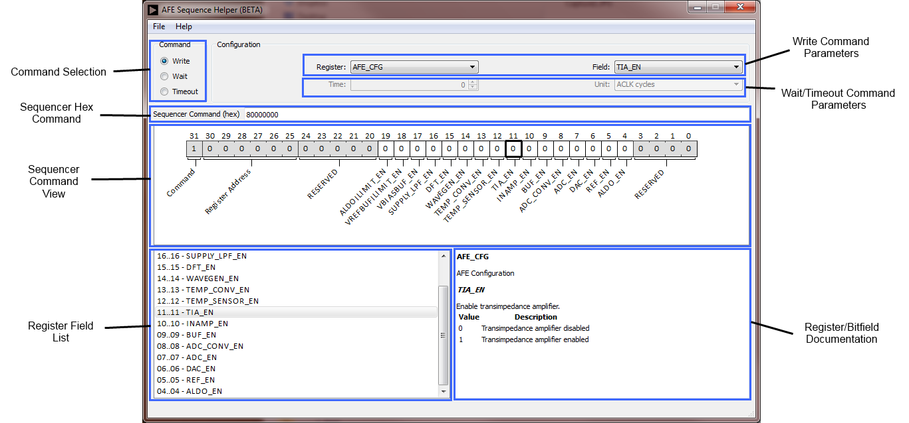
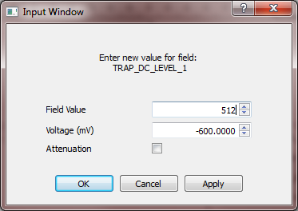
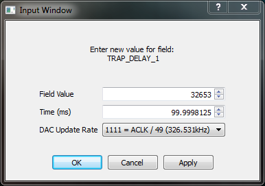
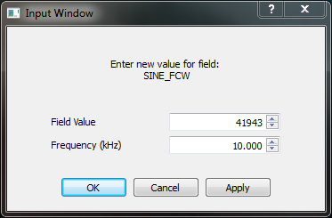
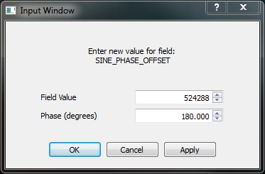
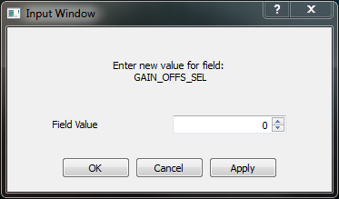

ADuCM350
AFE Sequence Helper
Introduction
The ADuCM350 AFE
Sequence Helper tool is provided to ease the development and debug of
AFE sequences.
The main features are:
- support for all AFE sequencer commands: Write, Wait, Timeout
- AFE sequencer hex code generation
- decoding of AFE sequencer hex commands
- easy navigation of AFE register map
- integrated help for AFE registers and bitfields
User
Interface

Command
Selection
This is used to select
the current command. The current command determines the configuration of
the other user interface elements.
The controls included
in "Write Command Parameters" and "Wait/Timeout Command Parameters" are
enabled/disabled according to the currently selected command.
[Top]
Write
Command Parameters
Two controls are
provided to help with the Write command customization:
- Register: list of all the
AFE registers that are mapped within the sequencer address range, in
alphabetical order.
- Selecting a register from the list changes the current view to
display the selected register
- Note: this list also includes read-only registers, or registers
that cannot be written by the sequencer.
- Field: list of all the AFE bitfields that belong to
the registers listed in the "Register" list, in alphabetical order.
- Selecting a bitfield from the list changes the current view to
display the register that contains the selected bitfield
- Note: this list also includes read-only bitfields, or birfields
that cannot be written by the sequencer.
[Top]
Wait/Timeout
Command Parameters
The controls are shared
between Wait and Timeout commands, and are made of:
- Time: the magnitude of the
wait/timeout value, expressed as a multiple of "Unit". This can be an
integer number of ACLK periods, or a real number of
microseconds/milliseconds.
- Unit: the choice is between ACLK periods (62.5ns
each), microseconds and milliseconds.
Note that if the time value entered is not an integer multiple of ACLK
periods, it is automatically adjusted to an integer multiple of ACLK
periods. This is to maintain consistency with the hardware sequencer.
[Top]
Sequencer
Hex Command
This is the hex
representation of the current command. It is always shown as an 8-digit
hex value.
It can also function as input: if a new value is entered, the tool will
automatically determine the command type and switch to it. The relevant
parameters will also by brought in sync with the new hex command entered.
This element serves a dual purpose:
- Sequence development: once a sequencer command has
been configured using the other graphical controls, the hex code shown
in this field can be copy&pasted into a C array
- Sequence debug: an existing hex code can be entered
into this field to obtain a simple "disassembled" view
[Top]
Sequencer
Command View
Shows the full 32 bits
of the sequencer command currently selected.
The bits that are
greyed out cannot be modified. Those can be one:
- MMR read-only bits (including reserved bits)
- MMR bits that cannot be written by the sequencer
- non-MMR bits needed by the sequencer, e.g. command bits
The sequencer command view is also used to configure the commands:
- Write: configure the contents of MMR bitfields
- Wait/Timeout: configure the time value
The configuration is done using the mouse:
- Left-Click: toggle the value of the bit. This is
most useful for bitfields made of single bits, such as enable bits.
- Right-Click: opens up a dialog window that allows
entering a new value for the current bitfield. This is most useful for
bitfields of larger widths, such as time values. A more detailed
explanation is provided later in the document.
[Top]
Register
Field List
This is a list of all
bitfields in the current register.
[Top]
Register
And Bitfield Documentation
Shows the documentation
for the current register and current bitfield. Except for minor fixes
and clarifications, it is the documentation included in the ADuCM350
Users Guide.
[Top]
Additional
Controls
In addition, the
application contains:
- Status
Bar: used to display application messages (information
messages, warnings and errors).
- Menu:
- File -> Load AFE State...: load the AFE MMR states from a file
in JSON format (default extension is ".afestate"). This file can be
modified manually, but it is strongly recommended to configure the
desired MMR state using the AFE Sequence Helper tool, then save it
from "File->Save AFE State..."
- File -> Save AFE State...: save the currently configured AFE
MMR state to file. Counterpart to the "Load AFE State" command
described above.
- File -> Reset AFE State...:resets all AFE MMR values to their
default (reset) values.
- File -> Exit: exit the application
- View: show/hide UI elements
- Help -> Documentation: this document
- Help -> Check for updates: check if a new version of the tool
is available. If a new version is found, a download link is provided
- Help -> About: shows the tool version
[Top]
Sequence
Development
Write
Command
The MMR contents are
initialized with the default reset values. Once initialized, the values
are stored internally by the tool, and once a register contents are
modified, re-selecting the register will restore the last modified
value. The MMR contents are not persistent between sessions.
Left-clicking a bit in the Sequencer Command View toggles the bit value.
This is convenient for bitfields with a width of 1-2 bits, e.g. enable
bits, but it becomes cumbersome for larger widths. For those, a second
method of entering values is provided, accessible by right-clicking the
bitfield in the Sequencer Command View.
This brings up a dialog
window that exposes settings dependent of the bitfield type:
- Voltage
- TRAP_DC_LEVEL_1
- TRAP_DC_LEVEL_2
- SINE_OFFSET
- SINE_AMPLITUDE
- DAC_CODE
- Time
- TRAP_DELAY_1
- TRAP_DELAY_2
- TRAP_SLOPE_1
- Frequency
- Phase
[Top]
Voltage Input
An example voltage input dialog is shown below:

The main components are:
- Field Value: this is the decimal value of the
bitfield. It is initialized with the current bitfield value.
- Voltage (mV): voltage expressed in millivolts. It
is calculated from the field value, taking into account the
enabled/disabled state of the attenuator ("Attenuation" checkbox).
- Attenuation: attenuator state (enabled/disabled).
It is used for converting from voltage to decimal, and from decimal to
voltage. This checkbox is initialized from the value of DAC_ATTEN_EN.
Checking/unchecking the control does not affect the value of the
DAC_ATTEN_EN bit.
When a new value is entered in the "Field Value" box, the "Voltage (mV)"
will be updated according to the "Attenuation" setting. Conversely, if a
new value is entered in the "Voltage (mV)" box, "Field Value" will be
updated. The calculation of the updated value uses the "Attenuation"
setting, and happens when clicking the "Apply" button, or simply when the
modified input box loses focus.
If conversion of a new voltage value entered does not result in an integer
value of the bitfield, the bitfield value is truncated to an integer
value. The voltage value is then adjusted to match the integer bitfield
value. This is required to match the hardware sequencer implementation.
Important: because of finite precision,
updating the decimal and voltage values sequentially from each other
multiple times without entering new values (for example clicking "Field
Value" and "Voltage (ms)" in succession) may result in undesired
variation of the values. This is not an intended usage of the tool and
should be avoided.
[Top]
Time Input
An example time input dialog is shown below:

The main components are:
- Field Value: this is the decimal value of the
bitfield. It is initialized with the current bitfield value.
- Time (ms): time expressed in milliseconds. It is
calculated from the field value, taking into account the DAC update
rate.
- DAC Update Rate: shows the DAC_UPDATE_RATE field
value, the ACLK divide factor and the resulting DAC update rate. It is
used for converting from time to decimal, and from decimal to time.
This checkbox is initialized from the value of DAC_UPDATE_RATE.
Selecting a different update rate does not affect the value of
DAC_UPDATE_RATE.
Updating the values happens in a similar fashion to the "Voltage Input"
dialog.
[Top]
Frequency Input
An example frequency input dialog is shown below:

The main components are:
- Field Value: this is the decimal value of the
bitfield. It is initialized with the current bitfield value.
- Frequency (kHz): frequency expressed in kHz. It is
calculated from the field value.
Updating the values happens in a similar fashion to the "Voltage Input"
dialog.
[Top]
Phase Input
An example phase input dialog is shown below:

The main components are:
- Field Value: this is the decimal value of the
bitfield. It is initialized with the current bitfield value.
- Phase (degrees): phase expressed in degrees. It is
calculated from the field value.
Updating the values happens in a similar fashion to the "Voltage Input"
dialog.
[Top]
Default Input
If the bitfield is not of one of the predefined types (voltage, time,
frequency, phase), a simple default input dialog is used. An example is
shown below:

The single components is "Field Value", which is the decimal value of the
bitfield, initialized with the current bitfield value.
[Top]
Comments
On popup, the dialog window always displays the current bitfield value:
decimal value and calculated value expressed in relevant units. This
allows it to be used as a quick converter between the bitfield value and
voltage/time/frequency/phase.
The default bitfield value format is decimal. The format can be changed to
hex by right-clicking in the "Field Value" input box and select "Number
Format: Hex".
[Top]
Wait
Command
Already discussed in
section Wait/Timeout
Command Parameters.
[Top]
Timeout
Command
Already discussed in section
Wait/Timeout
Command Parameters.